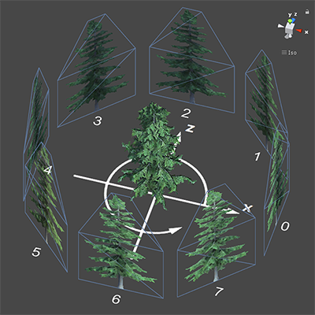

BillboardAsset
class in UnityEngine
/
Inherits from:Object
/
Implemented in:UnityEngine.CoreModule
Description 描述
BillboardAsset describes how a billboard is rendered.
Billboards are a level-of-detail (LOD) method of drawing complicated 3D objects in a simpler manner if they are further away. Because the object is further away, there is often less requirement to draw the object at full detail due to its size on-screen and low likelihood of being a focal point in the Camera view. Instead, the object can be pre-rendered to a texture, and this texture used on a very simple Camera-facing Mesh of flat geometry (often simply a quadrilateral) known as a billboard. At great distances an object does not significantly change its orientation relative to the camera, so a billboard looks much like the object it represents from frame to frame, without having to be redrawn from the model. The BillboardAsset class allows the creation of billboards that are rendered from several directions, allowing a BillboardAsset to efficiently represent an object at low level of detail from any approximately-horizontal viewpoint.
A BillboardAsset is usually created by importing SpeedTree assets. You can also create your own once you know how the billboard is described.
SpeedTree billboard geometry is usually more complex than a plain quadrilateral. By using more vertices to cut out the empty part of the billboard image, rendering performance can potentially be improved due to the graphics system not having to draw as many redundant transparent pixels. You have access to the geometry data via BillboardAsset.vertices and BillboardAsset.indices.
All vertices are considered in UV-space (see Fig. 1 below), because the geometry is due to be textured by the billboard images. UV vertices are easily expanded to 3D-space vertices by knowing the billboard's width, height, bottom, and what direction the billboard is currently facing. Assuming we have a billboard located at (0,0,0) looking at negative Z axis, the 3D-space coordinates are calculated as:
X = (u - 0.5) * width
Y = v * height + bottom
Z = 0 Figure 1: How UV vertices are expanded to 3D vertices
Figure 1: How UV vertices are expanded to 3D vertices
In order to display something similar to the real 3D mesh being billboarded, SpeedTree billboards select an appropriate image from several pre-rendered images according to the current view direction. The images in Figure 2 below are created by capturing the rendered image of the 3D tree at different view angles, evenly distributed around the Y-axis. The first image always starts at positive X axis direction (or 0° if you imagine a unit circle from above).

Figure 2: How the eight billboard images are baked
All images should be atlased together in one single texture. Each image is represented as a Vector4 of {left u, top v, width in u, height in v} in the atlas. You have access to all the images via BillboardAsset.imageTexCoords. SpeedTree Modeler always exports a normal texture alongside the diffuse texture for even better approximation of the lighting, and it shares the same atlas layout with the diffuse texutre.
Once the BillboardAsset is constructed, use BillboardRenderer to render it.
Properties 属性
| bottom | Height of the billboard that is below ground. | ||
| height | Height of the billboard. | ||
| imageCount | Number of pre-rendered images that can be switched when the billboard is viewed from different angles. | ||
| indexCount | Number of indices in the billboard mesh. | ||
| material | The material used for rendering. | ||
| vertexCount | Number of vertices in the billboard mesh. | ||
| width | Width of the billboard. |
Constructors
| BillboardAsset | Constructs a new BillboardAsset. |
Public Methods 公共方法
| GetImageTexCoords | Get the array of billboard image texture coordinate data. | ||
| GetIndices | Get the indices of the billboard mesh. | ||
| GetVertices | Get the vertices of the billboard mesh. | ||
| SetImageTexCoords | Set the array of billboard image texture coordinate data. | ||
| SetIndices | Set the indices of the billboard mesh. | ||
| SetVertices | Set the vertices of the billboard mesh. |
Inherited Members 继承成员
Properties 属性
| hideFlags | Should the object be hidden, saved with the Scene or modifiable by the user? | ||
| name | The name of the object. |
Public Methods 公共方法
| GetInstanceID | Returns the instance id of the object. | ||
| ToString | Returns the name of the object. |
Static Methods 静态方法
| Destroy | Removes a GameObject, component or asset. | ||
| DestroyImmediate | Destroys the object obj immediately. You are strongly recommended to use Destroy instead. | ||
| DontDestroyOnLoad | Do not destroy the target Object when loading a new Scene. | ||
| FindObjectOfType | Returns the first active loaded object of Type type. | ||
| FindObjectsOfType | Returns a list of all active loaded objects of Type type. | ||
| Instantiate | Clones the object original and returns the clone. |
Operators 运算符
Operators 运算符
Operators 运算符
| bool | Does the object exist? | ||
| operator != | Compares if two objects refer to a different object. | ||
| operator == | Compares two object references to see if they refer to the same object. |